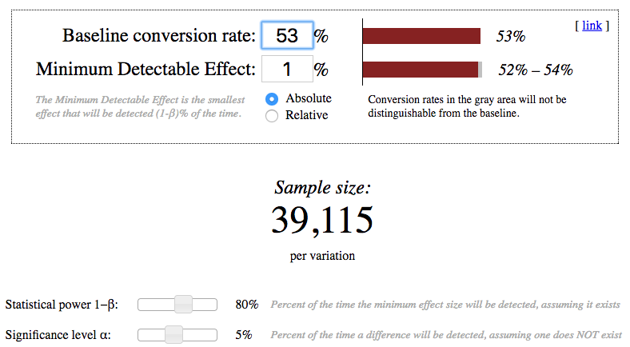
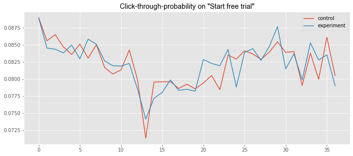
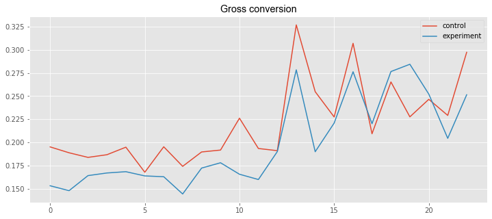
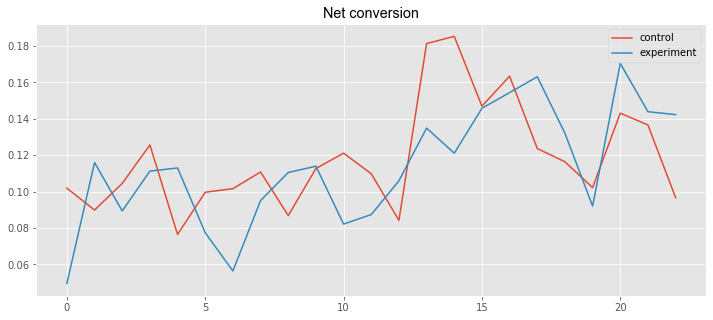
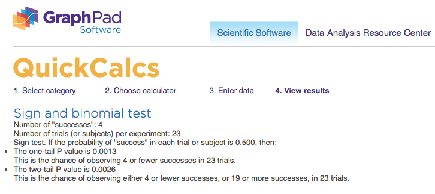
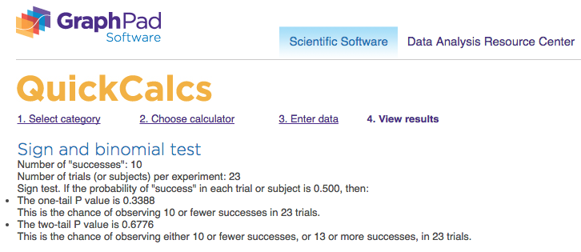
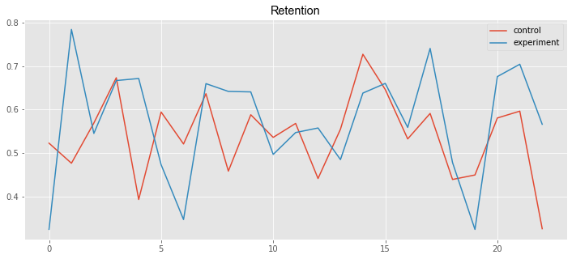

📘 Experiment design
📖 Experiment Overview: Free Trial Screener
At the time of this experiment, Udacity courses currently have two options on the home page: “start free trial”, and “access course materials”. If the student clicks “start free trial”, they will be asked to enter their credit card information, and then they will be enrolled in a free trial for the paid version of the course. After 14 days, they will automatically be charged unless they cancel first. If the student clicks “access course materials”, they will be able to view the videos and take the quizzes for free, but they will not receive coaching support or a verified certificate, and they will not submit their final project for feedback.
In the experiment, Udacity tested a change where if the student clicked “start free trial”, they were asked how much time they had available to devote to the course. If the student indicated 5 or more hours per week, they would be taken through the checkout process as usual. If they indicated fewer than 5 hours per week, a message would appear indicating that Udacity courses usually require a greater time commitment for successful completion, and suggesting that the student might like to access the course materials for free. At this point, the student would have the option to continue enrolling in the free trial, or access the course materials for free instead. The screenshot below shows what the experiment looks like.
The hypothesis was that this might set clearer expectations for students upfront, thus reducing the number of frustrated students who left the free trial because they didn’t have enough time—without significantly reducing the number of students to continue past the free trial and eventually complete the course. If this hypothesis held true, Udacity could improve the overall student experience and improve coaches’ capacity to support students who are likely to complete the course.
The unit of diversion is a cookie, although if the student enrolls in the free trial, they are tracked by user-id from that point forward. The same user-id cannot enroll in the free trial twice. For users that do not enroll, their user-id is not tracked in the experiment, even if they were signed in when they visited the course overview page.
from IPython.display import Image
Image('download.png')
📖 Metric Choice
Which of the following metrics would you choose to measure for this experiment and why? For each metric you choose, indicate whether you would use it as an invariant metric or an evaluation metric. The practical significance boundary for each metric, that is, the difference that would have to be observed before that was a meaningful change for the business, is given in parentheses. All practical significance boundaries are given as absolute changes.
Any place “unique cookies” are mentioned, the uniqueness is determined by day. (That is, the same cookie visiting on different days would be counted twice.) User-ids are automatically unique since the site does not allow the same user-id to enroll twice.
- Number of cookies: That is, number of unique cookies to view the course overview page. (dmin=3000)
- Number of user-ids: That is, number of users who enroll in the free trial. (dmin=50)
- Number of clicks: That is, number of unique cookies to click the “Start free trial” button (which happens before the free trial screener is trigger). (dmin=240)
- Click-through-probability: That is, number of unique cookies to click the “Start free trial” button divided by number of unique cookies to view the course overview page. (dmin=0.01)
- Gross conversion: That is, number of user-ids to complete checkout and enroll in the free trial divided by number of unique cookies to click the “Start free trial” button. (dmin= 0.01)
- Retention: That is, number of user-ids to remain enrolled past the 14-day boundary (and thus make at least one payment) divided by number of user-ids to complete checkout. (dmin=0.01)
- Net conversion: That is, number of user-ids to remain enrolled past the 14-day boundary (and thus make at least one payment) divided by the number of unique cookies to click the “Start free trial” button. (dmin= 0.0075)
🔵 Invariant metrics
expected to be unchanged in the control and experimental groups:
number of cookies
this metric cannot be affected by the experiment: users made a decision to visit the page before they were asked the question;number of clicks
this metric cannot be affected by the experiment: users clicked the button before they were asked the question;click-through probability
this metric cannot be affected by the experiment: it equals to the number of clicks divided by the number of cookies.🔵 Evaluation metrics
expected to be different in the control and experimental groups:gross conversion
this metric may decrease: users could make a decision to enroll in the free trial in the experimental group less than in the control group because they did not plan to learn 5+ hours per week;retention
this metriccan may increase: enrolled users could less be disappointed in the learning process and make more payments in the experimental group than in the control group because they paid attention to studying 5+ hours per week;net conversion
this metric may decrease: users could enroll in the free trial less in the experimental group than in the control group, thus could decrease the number of people who paid.
The goals of the experiment in the practical meaning:
- the number of payments should not be decreased;
- the number of students who were disappointed and had not paid because they could not study enough time should be reduced.
The goals of the experiment in terms of our metrics:
- the gross conversion should significantly decrease;
- the retention should significantly increase;
- the net conversion should not decrease.
An important remark: the number of user-ids is neither a good invariant metric nor a good evaluation metric.
From one side, the new pop-up message is likely to decrease the total number of user-ids who enrolled in the free trial, so it is not invariant; from the other side it is not normalized, the number of visitors may be different between the experiment and control groups, so it is not good for evaluation.
📖 Measuring Variability
This list contains rough estimates of the baseline values for these metrics (again, these numbers have been changed from Udacity’s true numbers).
baseline = pd.read_csv("Final Project Baseline Values - Sheet1.csv", index_col=False,header = None, names = ['metric','baseline_value'])
baseline| metric | baseline_value | |
|---|---|---|
| 0 | Unique cookies to view course overview page pe... | 40000.000000 |
| 1 | Unique cookies to click "Start free trial" per... | 3200.000000 |
| 2 | Enrollments per day: | 660.000000 |
| 3 | Click-through-probability on "Start free trial": | 0.080000 |
| 4 | Probability of enrolling, given click: | 0.206250 |
| 5 | Probability of payment, given enroll: | 0.530000 |
| 6 | Probability of payment, given click | 0.109313 |
For each metric I selected as an evaluation metric, estimate standard deviation analytically:
The number of clicks and enrollments follows a binomial distribution, and by the central limit theorem, the distribution of the three rates (gross conversion, retention, and net conversion) is Gaussian.
Given the daily sample of 5000 cookies, the number of clicks and enrollments can be calculated using the baseline values
Number of cookies = 5000
Number of clicks on “Start free trial” = 5000 × 0.08 = 400
Number of enrollments = 5000 × 0.08 × 0.20625 = 82.5
$$ SD \; Gross\; conversion = \sqrt{\frac{p (1 - p)} {n}} = \sqrt{\frac{0.20625 (1 - 0.20625)} {400} }= 0.0202 $$ $$ SD \; Retention = \sqrt{\frac{p (1 - p)} {n}} = \sqrt{\frac{0.53 (1 - 0.53)} { 82.5}} = 0.0549 $$ $$ SD \; Net\; conversion = \sqrt{\frac{p (1 - p)} {n}} = \sqrt{\frac{0.1093125 (1 - 0.1093125)} {400}} = 0.0156 $$
# Supporting calculation for the standard deviation
import math
print ("5000 × 0.08 × 0.20625 = ", 5000 * 0.08 * 0.20625)
print ("SD Gross conversion = ", math.sqrt(0.20625 * (1 - 0.20625) / 400))
print ("SD Retention = ", math.sqrt(0.53 * (1 - 0.53) / 82.5))
print ("SD Net conversion = ", math.sqrt(0.1093125 * (1 - 0.1093125) / 400))5000 × 0.08 × 0.20625 = 82.5
SD Gross conversion = 0.020230604137049392
SD Retention = 0.05494901217850908
SD Net conversion = 0.01560154458248846I would like to expect the analytical variance is close to the empirical variance for the gross conversion and for the net conversion: the denominator for these two indicators is the number of clicks, which is also the unit of diversion.
And it would be useful to collect an empirical estimate of the variability for the retention: the unit of diversion was not used in this case, the empirical variance of the retention is more likely to be higher than the analytical variance.
📖 Sizing
Number of Samples given Power
Using the analytic estimates of variance to calculate how many pageviews total (across both groups) would I need to collect to adequately power the experiment. Use an alpha of 0.05 and a beta of 0.2.
I have used the online calculator (References, N5) for calculating the sample sizes and have chosen the largest.
Image('sample_size.png')Image('Sample_Retention_Screenshot.png')
Image('Sample_Net_conversion_Screenshot.png')# Supporting calculation for the control and experimental groups
print ("Gross conversion: 2 × 25835 × 40000 ÷ 3200 = ", 2 * 25835 * 40000 / 3200.0)
print( "Retention: 2 × 39115 × 40000 ÷ 660 = ", 2 * 39115 * 40000 / 660.0)
print( "Net conversion: 2 × 27413 × 40000 ÷ 3200 = ", 2 * 27413 * 40000 / 3200.0)Gross conversion: 2 × 25835 × 40000 ÷ 3200 = 645875.0
Retention: 2 × 39115 × 40000 ÷ 660 = 4741212.121212121
Net conversion: 2 × 27413 × 40000 ÷ 3200 = 685325.0Duration vs. Exposure
# Supporting calculation for the number of days
print( "Number of pageviews: 4741212")
print ("(for the experiment with the gross conversion, the retention, and the net conversion)")
print ("Days (100% of the traffic) = 4741212 ÷ 40000 = ", 4741212 / 40000.0)
print()
print ("Number of pageviews: 685325")
print( "(for the experiment with the gross conversion and the net conversion)")
print( "Days (100% of the traffic) = 685325 ÷ 40000 = ", 685325 / 40000.0 )
print( "Days (60% of the traffic) = 685325 ÷ 40000 ÷ 0.6 = ", 685325 / 40000.0 / 0.6)Number of pageviews: 4741212
(for the experiment with the gross conversion, the retention, and the net conversion)
Days (100% of the traffic) = 4741212 ÷ 40000 = 118.5303
Number of pageviews: 685325
(for the experiment with the gross conversion and the net conversion)
Days (100% of the traffic) = 685325 ÷ 40000 = 17.133125
Days (60% of the traffic) = 685325 ÷ 40000 ÷ 0.6 = 28.555208333333333Even the use of 100 percent of the traffic does not allow testing in full for all three metrics (the gross conversion, the retention, and the net conversion). It turns out that we need to experiment 118 days. Of course, it is too long for tasks staged in the project. Percent reduction in traffic will increase this interval. Hence, it is necessary to reduce the number of test metrics and choose only two of them: the gross conversion and the net conversion.
I should reconsider an earlier decision about 4741212 needed pageviews and setup the number of pageviews equal to 685325. For the experiment with the gross conversion and the net conversion, we can use the period 17 days with the 100% traffic level. This interval is much better, but it gives us the result too quickly. The behavior of people in the field of education is quite difficult to analyze and trends in this area could be rarely detected in a short time period for 2-3 weeks. To slightly increase the time interval, we will set the percentage of used traffic at 60 (fraction = 0.6) and it gives us the number: 29 days.
It is also possible to take into consideration that the commercial risk is low: the site offers students to better plan and to evaluate their training time. The assumption of a sharp decrease in payments as a result of the pilot warning is devoid of practical foundation. For investments, the decisive factor is the first free period as a way to assess their own abilities, and it does not change during the experiment. The number of payments theoretically may slightly decrease due to the lower number of subscriptions, but this is only an assumption. Students who spend less than 5 hours a week are hardly able to complete the program successfully. In most cases, we are talking about reducing the waste of time for students and mentors.
And there is no risk in terms of privacy violation at all. Users do not enter any additional information about themselves in the process of the experiment except a little piece of information about planning.
It should be noted that the use of the fraction 0.6 does not affect the commercial interests seriously. From one side, the time interval and therefore the risk will increase. From another side, we keep the certain number of pageviews, therefore the experimental audience and the risk will not increase. It means our experiment could not practically be risky for the business.
Removing one indicator in the main part of the project, I want to analyze the experimental data in the last section on my own initiative a little bit wider and to determine what happens to the metrics “Retention” as the most interesting in terms of the psychological effect and the most unpredictable.
🔵 Number of pageviews: 685325. 🔵 Fraction of traffic exposed: 0.6. 🔵 Length of experiment: 29.
📘 Experiment Analysis
This data contains the raw information needed to compute the above metrics, broken down day by day. Note that there are two sheets within the spreadsheet - one for the experiment group, and one for the control group.The meaning of each column is:
- Pageviews: Number of unique cookies to view the course overview page that day.
- Clicks: Number of unique cookies to click the course overview page that day.
- Enrollments: Number of user-ids to enroll in the free trial that day.
- Payments: Number of user-ids who who enrolled on that day to remain enrolled for 14 days and thus make a payment.
(Note that the date for this column is the start date, that is, the date of enrollment, rather than the date of the payment. The payment happened 14 days later. Because of this, the enrollments and payments are tracked for 14 fewer days than the other columns.)
import pandas as pd
import matplotlib.pyplot as plt
import seaborn as sns
import numpy as np
%matplotlib inline# Read the data for the control and experimental groups
control_data = pd.read_csv('Final Project Results - Control.csv')
experiment_data = pd.read_csv('Final Project Results - Experiment.csv')
control_data2 = control_data[:23]
experiment_data2 = experiment_data[:23]
print ("Control data")
print (control_data.head(3))
print()
print( "Experimental data")
print (experiment_data.head(3))Control data
Date Pageviews Clicks Enrollments Payments
0 Sat, Oct 11 7723 687 134.0 70.0
1 Sun, Oct 12 9102 779 147.0 70.0
2 Mon, Oct 13 10511 909 167.0 95.0
Experimental data
Date Pageviews Clicks Enrollments Payments
0 Sat, Oct 11 7716 686 105.0 34.0
1 Sun, Oct 12 9288 785 116.0 91.0
2 Mon, Oct 13 10480 884 145.0 79.0# Plot the metrics
plt.style.use('ggplot')
plt.rcParams['figure.figsize'] = (12, 5)
csfont = {'fontname':'Arial'}
plt.title('Click-through-probability on "Start free trial"', **csfont)
line1, = plt.plot(control_data['Clicks']/control_data['Pageviews'], label='control')
line2, = plt.plot(experiment_data['Clicks']/experiment_data['Pageviews'], label='experiment')
plt.legend(handles=[line1, line2])<matplotlib.legend.Legend at 0x1a16a3a46d8>
plt.title('Gross conversion', **csfont)
line3, = plt.plot(control_data2['Enrollments']/control_data2['Clicks'], label='control')
line4, = plt.plot(experiment_data2['Enrollments']/experiment_data2['Clicks'], label='experiment')
plt.legend(handles=[line3, line4])<matplotlib.legend.Legend at 0x1a16a5ae9e8>
plt.title('Net conversion', **csfont)
line7, = plt.plot(control_data2['Payments']/control_data2['Clicks'], label='control')
line8, = plt.plot(experiment_data2['Payments']/experiment_data2['Clicks'], label='experiment')
plt.legend(handles=[line7, line8])<matplotlib.legend.Legend at 0x1a16a3f4a20>
📖 Sanity Checks
Start by checking whether your invariant metrics are equivalent between the two groups.
- If the invariant metric is a simple count that should be randomly split between the 2 groups, you can use a binomial test.
- Otherwise, you will need to construct a confidence interval for a difference in proportions using a similar strategy then check whether the difference between group values falls within that confidence level.
print( "Control group:")
print( "Clicks = ", control_data['Clicks'].sum(), " ", \
"Pageviews = ", control_data['Pageviews'].sum())
print()
print( "Experimental group:")
print ("Clicks = ", experiment_data['Clicks'].sum(), " ", \
"Pageviews = ", experiment_data['Pageviews'].sum())Control group:
Clicks = 28378 Pageviews = 345543
Experimental group:
Clicks = 28325 Pageviews = 344660# Supporting calculation for checking invariant metrics
p = 0.5
print ("Number of cookies:")
SE_cookies = math.sqrt(p * p / (345543 + 344660))
print ("Standard error SE = ", SE_cookies)
ME_cookies = SE_cookies * 1.96
print( "Margin of error ME = ", ME_cookies)
(LB_cookies, UB_cookies) = (p - ME_cookies, p + ME_cookies)
print ("Confidential interval CI = ", (LB_cookies, UB_cookies))
print( u'p\u0302', "=", 345543.0 / (345543 + 344660), u'\u2208', (LB_cookies, UB_cookies), u'\u2713')
print()
print ('Number of clicks on “Start free trial":')
SE_clicks = math.sqrt(0.5 * 0.5 / (28378 + 28325))
print( "Standard error SE = ", SE_clicks)
ME_clicks = SE_clicks * 1.96
print ("Margin of error ME = ", ME_clicks)
(LB_clicks, UB_clicks) = (p - ME_clicks, p + ME_clicks)
print ("Confidential interval CI = ", (LB_clicks, UB_clicks))
print( u'p\u0302', "=", 28378.0 / (28378 + 28325), u'\u2208', (LB_clicks, UB_clicks), u'\u2713')
print()
print( 'Click-through-probability on "Start free trial":')
p_pool = 1.0 * (28378 + 28325) / (345543 + 344660)
print ("Pooled probability p_pool = ", p_pool)
SE_pool = math.sqrt(p_pool * (1 - p_pool) * (1.0 / 345543 + 1.0 / 344660))
print ("Standard error SE = ", SE_pool)
ME_pool = SE_pool * 1.96
print ("Margin of error ME = ", ME_pool)
d_hat = 28325.0 / 344660 - 28378.0 / 345543
print( "Difference", u'd\u0302', "= ", d_hat)
(LB_pool, UB_pool) = (0 - ME_pool, 0 + ME_pool)
print ("Confidential interval CI = ", (LB_pool, UB_pool))
print (u'd\u0302', u'\u2208', (LB_pool, UB_pool), u'\u2713')Number of cookies:
Standard error SE = 0.0006018407402943247
Margin of error ME = 0.0011796078509768765
Confidential interval CI = (0.49882039214902313, 0.5011796078509769)
p̂ = 0.5006396668806133 ∈ (0.49882039214902313, 0.5011796078509769) ✓
Number of clicks on “Start free trial":
Standard error SE = 0.002099747079699252
Margin of error ME = 0.0041155042762105335
Confidential interval CI = (0.49588449572378945, 0.5041155042762105)
p̂ = 0.5004673474066628 ∈ (0.49588449572378945, 0.5041155042762105) ✓
Click-through-probability on "Start free trial":
Pooled probability p_pool = 0.08215409089789526
Standard error SE = 0.0006610608156387222
Margin of error ME = 0.0012956791986518956
Difference d̂ = 5.662709158693602e-05
Confidential interval CI = (-0.0012956791986518956, 0.0012956791986518956)
d̂ ∈ (-0.0012956791986518956, 0.0012956791986518956) ✓🔵 Number of cookies Lower bound = 0.4988; Upper bound = 0.5012; Observed = 0.5006; Passes = ✅
🔵 Number of clicks on “Start free trial” Lower bound = 0.4959; Upper bound = 0.5041; Observed = 0.5005; Passes = ✅
🔵 Click-through-probability on “Start free trial” (Difference between the control and experimental groups) Lower bound = -0.0013; Upper bound = 0.0013; Observed = 0.0001; Passes = ✅
📖 Result Analysis
Check for Practical and Statistical Significance
Next, for my evaluation metrics, calculate a confidence interval for the difference between the experiment and control groups, and check whether each metric is statistically and/or practically significance.
- A metric is statistically significant if the confidence interval does not include 0 (that is, you can be confident there was a change)
- it is practically significant if the confidence interval does not include the practical significance boundary (that is, you can be confident there is a change that matters to the business.)
print ("Control group:")
print( "Clicks = ", control_data2['Clicks'].sum(), " ", \
"Enrollments = ", control_data2['Enrollments'].sum(), " ", \
"Payments = ", control_data2['Payments'].sum())
print( "Experimental group:")
print( "Clicks = ", experiment_data2['Clicks'].sum(), " ", \
"Enrollments = ", experiment_data2['Enrollments'].sum(), " ", \
"Payments = ", experiment_data2['Payments'].sum())
Control group:
Clicks = 17293 Enrollments = 3785.0 Payments = 2033.0
Experimental group:
Clicks = 17260 Enrollments = 3423.0 Payments = 1945.0# Supporting calculation for checking evaluation metrics
print ("Gross conversion")
p_pool = 1.0 * (3785.0 + 3423.0) / (17293 + 17260)
print( "Pooled probability p_pool = ", p_pool)
SE_pool = math.sqrt(p_pool * (1 - p_pool) * (1.0 / 17293 + 1.0 / 17260))
print( "Standard error SE = ", SE_pool)
ME_pool = SE_pool * 1.96
print ("Margin of error ME = ", ME_pool)
d = 3423.0 / 17260 - 3785.0 / 17293
print( "Difference d", "= ", d)
(LB_pool, UB_pool) = (d - ME_pool, d + ME_pool)
print( "Confidential interval CI = ", (LB_pool, UB_pool))
print ((-0.01, 0, 0.01), u'\u2209', (LB_pool, UB_pool))
print( "Statistical significance", u'\u2713', " Practical significance ", u'\u2713')
print()
print ("Net conversion")
p_pool = 1.0 * (2033.0 + 1945.0) / (17293 + 17260)
print ("Pooled probability p_pool = ", p_pool)
SE_pool = math.sqrt(p_pool * (1 - p_pool) * (1.0 / 17293 + 1.0 / 17260))
print( "Standard error SE = ", SE_pool)
ME_pool = SE_pool * 1.96
print ("Margin of error ME = ", ME_pool)
d = 1945.0 / 17260 - 2033.0 / 17293
print( "Difference d = ", d)
(LB_pool, UB_pool) = (d - ME_pool, d + ME_pool)
print ("Confidential interval CI = ", (LB_pool, UB_pool))
print( 0, u'\u2208', (LB_pool, UB_pool), "; dmin = -0.0075", u'\u2208', (LB_pool, UB_pool))
print ("Statistical significance", u'\u2718', " Practical significance ", u'\u2718')Gross conversion
Pooled probability p_pool = 0.20860706740369866
Standard error SE = 0.004371675385225936
Margin of error ME = 0.008568483755042836
Difference d = -0.020554874580361565
Confidential interval CI = (-0.0291233583354044, -0.01198639082531873)
(-0.01, 0, 0.01) ∉ (-0.0291233583354044, -0.01198639082531873)
Statistical significance ✓ Practical significance ✓
Net conversion
Pooled probability p_pool = 0.1151274853124186
Standard error SE = 0.0034341335129324238
Margin of error ME = 0.0067309016853475505
Difference d = -0.0048737226745441675
Confidential interval CI = (-0.011604624359891718, 0.001857179010803383)
0 ∈ (-0.011604624359891718, 0.001857179010803383) ; dmin = -0.0075 ∈ (-0.011604624359891718, 0.001857179010803383)
Statistical significance ✘ Practical significance ✘We have measured two metrics in one experiment. Applying the Bonferroni correction means that the a-level for each hypothesis will be 2.5 % instead of 5% and confidential intervals will be significantly wider. It is too conservative for some reasons.
The use of the Bonferroni correction would really be needed if we test several metrics in one experiment and expect that at least one metrics will demonstrate the statistically significant change. In the set of metrics, this matching only for one indicator can be an absolutely random event, therefore the experiment will have a false positive result. It means we should increase the confidential intervals to avoid this situation and apply the Bonferroni correction.
But in the case of our experiment, we expect two metrics will have matched our criteria at the same time to proceed with the launch. It’s a very strong condition without any correction. The positive results will be more likely to occur not by chance. Therefore, the Bonferroni correction could be the cause to approve the wrong null hypothesis and we should not use it this time.
Also, our metrics have a strong relationship between each other. If we know the outcome of one test of a difference between the control and experimental groups on one metrics, it would be easy to predict and to find the outcome of the other tests on the other metrics. It’s absolutely natural to expect their behavior will be similar simultaneously.
Effect Size Tests
🔴 I did not use the Bonferroni correction.
🔵 Gross conversion (Difference between the control and experimental groups)
Lower bound = -0.0291; Upper bound = -0.0120; Statistical significance = ✅; Practical significance = ✅
🔵 Net conversion (Difference between the control and experimental groups)
Lower bound = -0.0116; Upper bound = 0.0019; Statistical significance = ❎; Practical significance = ❎
Sign Tests(Double check)
To further test each of the evaluation metrics, a binomial sign test can be conducted to evaluate Each day of the experiment to see if there is a positive or negative difference across groups (experimental-control). Each positive difference is counted as a success, and each negative difference as a failure. Then comparing the resulting p-values for each metric to determine significance.
# Supporting calculation of successful events for the evaluation metrics
Gross_conversion_success = experiment_data2['Enrollments']/experiment_data2['Clicks'] \
>control_data2['Enrollments']/control_data2['Clicks']
print( "Gross conversion: success =", Gross_conversion_success.sum(), " total =", Gross_conversion_success.size)
Net_conversion_success = experiment_data2['Payments']/experiment_data2['Clicks'] \
>control_data2['Payments']/control_data2['Clicks']
print ("Net conversion: success =", Net_conversion_success.sum(), " total =", Net_conversion_success.size)Gross conversion: success = 4 total = 23
Net conversion: success = 10 total = 23Image('Sign_Gross_conversion_Screenshot.png')
Image('Sign_Net_conversion_Screenshot.png')
🔵 Gross conversion: p-value = 0.0026; statistical significance = ✅ 🔵 Net conversion: p-value = 0.6776; statistical significance = ❎
Eventually, the effective size and sign tests show that the site change would statistically significantly reduce the gross conversion, but would not affect the net conversion in a statistically significant way. The effect size test states this in the practical meaning also.
I did not use the Bonferroni correction for any calculations because it will be too conservative in the case of highly related metrics which should give the expected result simultaneously.
📖 Recommendation
The recommendation is not to launch the experiment change because the negative results have outweighed the positive ones.
🔴 Positive results of the experiment.
- The difference for the gross conversion is practically significant and negative. This is a good sign: the Udacity team can lower costs by a number of trial signups.
- The difference for the net conversion is not statistically significant. It means the absence of serious financial losses.
🔵 Negative results of the experiment:
- The interval for the difference in the case of the net conversion includes negative numbers. Therefore, the team has a risk to decrease incomes.
- We have not gathered enough data to draw conclusions about the retention and because of this we can not evaluate correctly the difference between the control and experimental groups for a number of students who were disappointed in studying during the free period. Consequently, we do not know enrolled users would be disappointed in the learning process less and make more payments or would not.
📘 Follow-Up Experiment
Before scheduling the follow-up experiment, I would like to analyze the available data for the evaluation metrics “Retention”.
plt.title('Retention', **csfont)
line5, = plt.plot(control_data2['Payments']/control_data2['Enrollments'], label='control')
line6, = plt.plot(experiment_data2['Payments']/experiment_data2['Enrollments'], label='experiment')
plt.legend(handles=[line5, line6])<matplotlib.legend.Legend at 0x1a16a413b38>
print ("Retention")
print()
print ("Effect Size Tests")
p_pool = 1.0 * (2033.0 + 1945.0) / (3785.0 + 3423.0)
print( "Pooled probability p_pool = ", p_pool)
SE_pool = math.sqrt(p_pool * (1 - p_pool) * (1.0 / 3785.0 + 1.0 / 3423.0))
print ("Standard error SE = ", SE_pool)
ME_pool = SE_pool * 1.96
print( "Margin of error ME = ", ME_pool)
d = 1945.0 / 3423.0 - 2033.0 / 3785.0
print( "Difference d = ", d)
(LB_pool, UB_pool) = (d - ME_pool, d + ME_pool)
print( "Confidential interval CI = ", (LB_pool, UB_pool))
print (0, u'\u2209', (LB_pool, UB_pool), "; dmin = 0.01", u'\u2208', (LB_pool, UB_pool))
print ("Statistical significance", u'\u2713', " Practical significance ", u'\u2718')
print ()
print ("Sign test")
Retention_success = experiment_data2['Payments']/experiment_data2['Enrollments'] \
>control_data2['Payments']/control_data2['Enrollments']
print( "success =", Retention_success.sum(), " total =", Retention_success.size)Retention
Effect Size Tests
Pooled probability p_pool = 0.5518867924528302
Standard error SE = 0.011729780091389183
Margin of error ME = 0.022990368979122797
Difference d = 0.031094804707142765
Confidential interval CI = (0.008104435728019967, 0.05408517368626556)
0 ∉ (0.008104435728019967, 0.05408517368626556) ; dmin = 0.01 ∈ (0.008104435728019967, 0.05408517368626556)
Statistical significance ✓ Practical significance ✘
Sign test
success = 13 total = 23Image('download (2).png')Retention (Difference between the control and experimental groups)
🔵 Effect size test
Lower bound = 0.0081; Upper bound = 0.0541; Statistical significance = ✅; Practical significance = ❎
🔵 Sign test: p-value = 0.6776; statistical significance = ❎
the sign test does not agree with the confidence interval for the difference, see if you can figure out why.
Gross_conversion_diff = experiment_data2['Enrollments']/experiment_data2['Clicks'] - \
control_data2['Enrollments']/control_data2['Clicks']
print( "Gross conversion difference")
print ("Median: ", Gross_conversion_diff.median())
print( "Mean: ", Gross_conversion_diff.mean())
print()
Retention_diff = experiment_data2['Payments']/experiment_data2['Enrollments'] - \
control_data2['Payments']/control_data2['Enrollments']
print( "Retention difference")
print ("Median: ", Retention_diff.median())
print ("Mean: ", Retention_diff.mean())
print()
Net_conversion_diff = experiment_data2['Payments']/experiment_data2['Clicks'] - \
control_data2['Payments']/control_data2['Clicks']
print( "Net conversion difference")
print ("Median: ", Net_conversion_diff.median())
print ("Mean: ", Net_conversion_diff.mean())Gross conversion difference
Median: -0.02475834310525149
Mean: -0.02078458202926592
Retention difference
Median: 0.023210831721469982
Mean: 0.033342507466384695
Net conversion difference
Median: -0.009027852539948616
Mean: -0.004896856989809377Statistical significance of the difference between the control and experimental groups was checked by using the values of the mean (effect size tests) and the median (sign tests). As we can see, these values vary considerably for the retention and it causes that the test results also differ.
Even a cursory analysis of insufficient data in a certain way confirms our intuitive assumptions about the behavior of this metric. The ratio of payments to enrollments tends to increase in the presence of the experimental warning. However, it is not possible to confirm this with sufficient certainty in the borders of this experiment and it is necessary to redesign the research.
If you wanted to reduce the number of frustrated students who cancel early in the course, what experiment would you try? Give a brief description of the change you would make, what your hypothesis would be about the effect of the change, what metrics you would want to measure, and what unit of diversion you would use. Include an explanation of each of your choices.I would suggest these possible changes to the proposed experiment.
- Extend the duration of the experiment up to 2 months with constant monitoring of incomes for avoiding financial risks. If the decline in revenues becomes out of the certain limits, the study should be stopped immediately.
- Measure all three evaluation metrics (the gross conversion, the retention, and the net conversion) for the 100% level of traffic because the audience of this site is very different in education, age, nationality, and other characteristics. Any reduction in the percentage of participants can significantly distort the results.
- Replace the visualization message by the video with an explanation of successful learning strategies based on statistics of the particular site or by the input test for the course level recommendations exactly for this user.
- In order to avoid the negative psychological effect or cut the extremely talented part of the audience which is able to pass the course without spending a lot of time to study, all changes should be only informative and recommendatory.
- Recommendations in the videos or leveled tests should have the most practical character that is suitable for this course.
- The length of free trial period is unchanged.
I think the effect will be more detectable.
Now we can begin to define the technical details of the experiment. Selecting the unit of diversion, and invariant and evaluation metrics was quite reasonable. It is easy to obtain measurement results for decision making without the high level of costs or risks. Accordingly, I propose to leave them unchanged.
Unit of diversion: the cookie. Invariant metrics: the number of cookies, the number of clicks, and the click-through-probability. Evaluation metrics: the gross conversion, the retention, and the net conversion. The hypothesizes about the behavior of our metrics are also stayed the same:
the gross conversion should significantly decrease; the retention should significantly increase; the net conversion should not decrease. I expect the overcoming the negative results of the previous experiment and detecting the tendencies for all evaluation metrics.
Reference
- The final project: https://classroom.udacity.com/courses/ud257/lessons/4126079196/concepts/42072285530923
- The project instructions: https://docs.google.com/document/u/1/d/1aCquhIqsUApgsxQ8-SQBAigFDcfWVVohLEXcV6jWbdI/pub?embedded=True
- The template format: https://docs.google.com/document/d/16OX2KDSHI9mSCriyGIATpRGscIW2JmByMd0ITqKYvNg/edit
- The final project results: https://docs.google.com/spreadsheets/d/1Mu5u9GrybDdska-ljPXyBjTpdZIUev_6i7t4LRDfXM8/edit#gid=0
- The online calculator “Sample size”: http://www.evanmiller.org/ab-testing/sample-size.html